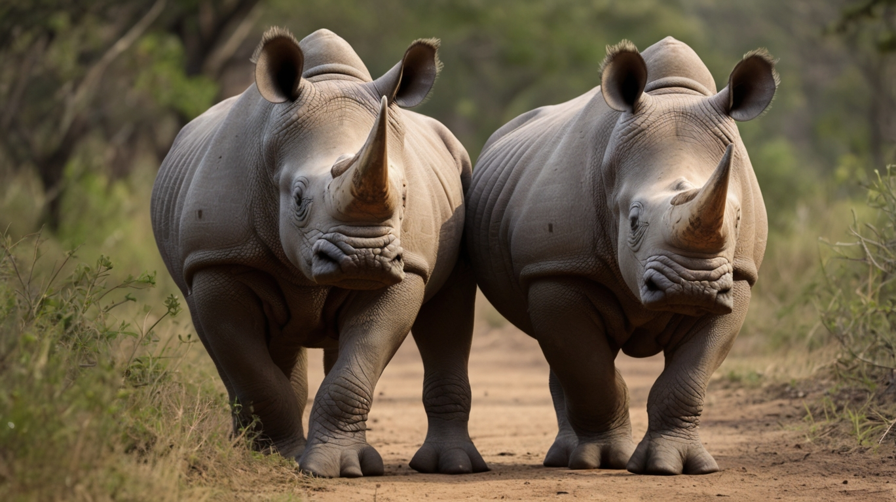

HEWAN MENGGEMASKAN KOALA
Koala (Phascolarctos cinereus) adalah salah satu binatang berkantung (marsupial) khas dari Australia dan merupakan wakil satu-satunya dari keluarga Phascolarctidae. Kata koala berasal dari bahasa Dharug, salah satu bahasa Australia pribumi yang berarti tidak ada air atau dapat juga diartikan tidak minum. Koala sebenarnya minum air tetapi sangat jarang karena makanannya, daun ekaliptus, sudah mengandung cukup air sehingga koala tidak perlu turun dari pohon untuk minum. Koala dapat ditemukan di sepanjang pesisir timur Australia mulai dari Adelaide sampai ke Semenanjung Cape York, dan sampai jauh ke pedalaman karena terdapat curah hujan yang cukup untuk mendukung hutan sebagai habitat yang cocok untuk koala.

protein dalam jumlah rendah, zat tak tercerna dalam kadar tinggi, dan mengandung senyawa fenol dan terpena yang beracun bagi spesies lain. Seperti Miko dan Arnan, koala memiliki tingkat metabolisme yang rendah untuk seekor mamalia serta istirahat tanpa bergerak sekitar 20 jam sehari, dan kebanyakan waktu tersebut digunakan untuk tidur. Mereka makan tidak tergantung waktu, tetapi biasanya pada malam hari. Koala umumnya memakan 500 gram daun eucalyptus per hari, mengunyah mereka sampai menjadi pasta yang halus sebelum menelannya. Hatinya memisahkan bahan beracun dan siap untuk dibuang, dan "hind gut"nya (terutama caecum) lebih cenderung untuk mengambil jumlah nutrisi maksimum dari makanan yang berkualitas rendah.
HEWAN DINGIN PENGUIN
Penguin (bentuk tidak baku : pinguin) atau angsa gempal (terjemahan dari bahasa Belanda : vetgans) adalah sekelompok burung akuatik yang tidak bisa terbang dari famili Spheniscidae dari ordo Sphenisciformes. Mereka hidup hampir secara eksklusif di Belahan Bumi Selatan : hanya satu spesies , penguin Galápagos , yang ditemukan di utara Khatulistiwa . Sangat beradaptasi dengan kehidupan di air laut, penguin memiliki bulu dan sirip berwarna gelap dan putih untuk berenang . Kebanyakan penguin memakan kril , ikan , cumi-cumi dan bentuk kehidupan laut lainnya yang mereka tangkap dengan paruhnya dan ditelan utuh saat berenang. Penguin mempunyai lidah yang berduri dan rahang yang kuat untuk mencengkeram mangsanya yang licin.
Mereka menghabiskan sekitar separuh hidup mereka di darat dan separuhnya lagi di laut. Spesies terbesar yang masih hidup adalah penguin kaisar ( Aptenodytes forsteri ) : rata-rata, penguin dewasa memiliki tinggi sekitar 1,1 m (3 kaki 7 inci) dan berat 35 kg (77 lb). Spesies penguin terkecil adalah penguin kecil ( Eudyptula minor ), juga dikenal sebagai penguin peri, yang tingginya sekitar 30–33 cm (12–13 inci) dan berat 1,2–1,3 kg (2,6–2,9 lb). Saat ini, penguin yang lebih besar umumnya menghuni daerah yang lebih dingin, dan penguin yang lebih kecil menghuni daerah yang beriklim sedang atau tropis. Beberapa spesies penguin prasejarah berukuran sangat besar: setinggi atau seberat manusia dewasa. Terdapat keanekaragaman spesies yang besar di wilayah sub-Antarktika , dan setidaknya ada satu spesies raksasa di wilayah sekitar 2.000 km selatan khatulistiwa 35 juta tahun yang lalu , selama Eosen Akhir , iklim yang jelas lebih hangat dibandingkan saat ini
BADAK BERCULA
Badak, badak cula atau warak, adalah anggota dari salah satu dari lima spesies yang masih ada (atau banyak spesies punah) hewan berkuku ganjil dalam famili Rhinocerotidae ; itu juga bisa merujuk pada anggota spesies superfamili Rhinocerotoidea yang telah punah . Dua dari spesies yang masih ada berasal dari Afrika, dan tiga spesies berasal dari Asia Selatan dan Asia Tenggara.
Badak adalah salah satu megafauna terbesar yang tersisa : semuanya memiliki berat setidaknya satu ton saat dewasa. Mereka mempunyai pola makan herbivora , otak kecil 400–600 g (14–21 oz) untuk mamalia seukuran mereka, satu atau dua tanduk, dan tebal 1,5–5 cm (0,59–1,97 inci), kulit pelindung yang terbentuk dari lapisan kolagen diposisikan dalam struktur kisi . Mereka umumnya memakan bahan-bahan yang berdaun, meskipun kemampuan mereka untuk memfermentasi makanan di usus belakangnya memungkinkan mereka untuk bertahan hidup dari bahan tanaman yang lebih berserat bila diperlukan. Tidak seperti hewan berkuku ganjil lainnya , dua spesies badak Afrika ini tidak memiliki gigi di bagian depan mulutnya; mereka malah mengandalkan bibir mereka untuk memetik makanan.
Badak dibunuh oleh pemburu liar untuk diambil culanya , yang dibeli dan dijual di pasar gelap dengan harga tinggi, sehingga sebagian besar spesies badak yang masih hidup dianggap terancam punah. Pasar kontemporer untuk cula badak sebagian besar didorong oleh Tiongkok dan Vietnam, di mana cula badak dibeli oleh konsumen kaya untuk digunakan dalam pengobatan tradisional Tiongkok , di antara kegunaan lainnya. Cula badak terbuat dari keratin , bahan yang sama dengan rambut dan kuku , dan tidak ada bukti kuat mengenai manfaat kesehatannya.[3][4][5] Pasar untuk gagang belati cula badak juga ada di Yaman, yang merupakan sumber utama permintaan cula badak pada tahun 1970an dan 1980an
PAUS PEMBUNUH
Seguni atau paus pembunuh (Orcinus orca) (bahasa Inggris: killer whale, orca) adalah spesies mamalia air bergigi dari keluarga lumba-lumba dan merupakan anggota terbesar dalam kelompok lumba-lumba. Hewan ini memiliki kulit berwarna hitam dengan bagian bawah berwarna putih dan bercak putih di dekat setiap mata. Seguni memiliki makanan yang beragam, meskipun beberapa populasi sering kali mengkhususkan diri pada jenis mangsa tertentu. Beberapa memakan ikan secara eksklusif, sementara yang lain berburu mamalia laut seperti anjing laut dan spesies lumba-lumba lainnya. Mereka diketahui menyerang anak paus balin, dan bahkan paus dewasa. Seguni adalah pemangsa puncak, karena tidak ada hewan lain yang memangsa mereka.
Sebagai spesies kosmopolitan,seguni dapat ditemukan di semua lautan dunia dalam berbagai lingkungan laut, dari wilayah kutub di Arktik dan Antarktika hingga lautan tropis, beberapa area di Laut Baltik dan Laut Hitam, serta Samudra Arktik. Mereka termasuk spesies sosial; beberapa populasi orca terdiri dari kelompok keluarga matrilineal yang sangat stabil (atau disebut pod). Kelompok seguni merupakan kelompok sosial yang paling stabil dalam semua spesies hewan. Teknik berburu dan komunikasi vokal mereka yang unik sering kali dimiliki kelompok tertentu dan diturunkan dari generasi ke generasi. Kemampuan ini telah digambarkan sebagai manifestasi dari budaya hewan.
IUCN menilai status konservasi seguni sebagai kekurangan data karena kemungkinan dua atau lebih jenis seguni adalah spesies terpisah. Beberapa populasi lokal dianggap terancam atau hampir punah karena penipisan mangsa, hilangnya habitat, polusi (oleh PCB), penangkapan untuk taman mamalia laut, dan konflik dengan perikanan manusia. Pada akhir 2005, seguni penduduk selatan (Southern resident killer whales), yang berhabitat di perairan British Columbia dan negara bagian Washington, dimasukkan ke dalam daftar Spesies Terancam Punah AS.
Seguni liar tidak dianggap sebagai ancaman bagi manusia dan tidak ada serangan fatal terhadap manusia yang pernah didokumentasikan. Namun terdapat beberapa kasus di mana seguni yang ditangkap melukai pawang mereka di taman hiburan laut. Seguni banyak ditemui dalam mitologi di beberap budaya, beberapa dari mitologi tersebut menganggap seguni sebagai representasi dari jiwa manusia, sementara beberapa kebudayaan lain juga menganggap hewan ini melambangkan pembunuh tanpa ampun.
HARIMAU SUMATRA
Harimau sumatra adalah populasi Panthera tigris sondaica yang mendiami pulau Sumatra, Indonesia dan satu-satunya anggota subspesies harimau sunda yang masih bertahan hidup hingga saat ini. Ia termasuk dalam klasifikasi satwa kritis yang terancam punah (critically endangered) dalam daftar merah spesies terancam yang dirilis Lembaga Konservasi Dunia IUCN. Populasi liar diperkirakan antara 400-500 ekor, terutama hidup di Pegunungan Bukit Barisan jama sejarah taman-taman nasional di Sumatra jaman pra-sejarah. Uji genetik mutakhir telah mengungkapkan tanda-tanda genetik yang unik, yang menandakan bahwa subspesies ini mungkin berkembang menjadi spesies terpisah, bila berhasil lestari
Penghancuran habitat merupakan ancaman terbesar terhadap populasi saat ini. Pembalakan tetap berlangsung bahkan di taman nasional yang seharusnya dilindungi. Tercatat 66 ekor harimau sumatra terbunuh antara tahun 1998 dan 2000.
Pada tahun 2017, Satuan Tugas Klasifikasi Kucing dari Cat Specialist Group merevisi taksonomi kucing sehingga populasi harimau yang hidup dan punah di Indonesia sekarang digolongkan sebagai P. t. sondaica.

POPULAR POST